Portfolio
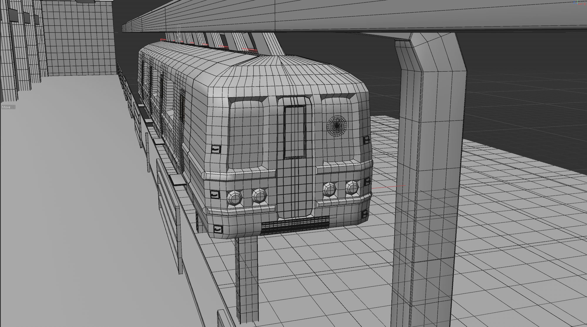
This is a work-in-progress model of a train inspired by the A train. I used a reference image as the base model and adapted it into a skyrail train. I still need to add lighting, textures, and a background environment. My goal with this piece is to capture a retro-futuristic feel while planning to adopt a more realistic overall style compared to the more stylized appearance of my other works.
Train (WIP) | 2024 | Blender | Cinema 4D
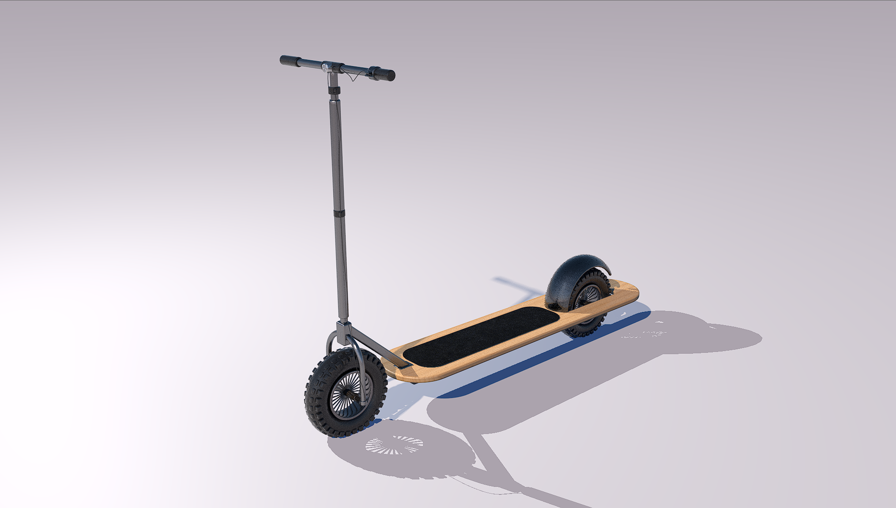
This is a scooter I designed. This was my second project, made with Cinema 4D. It was primarily constructed using primitives, with a couple of modifiers for the wheels and board. I used textures from the C4D library. The rendering was done using Redshift.
Simple Scooter | 2024 | Blender
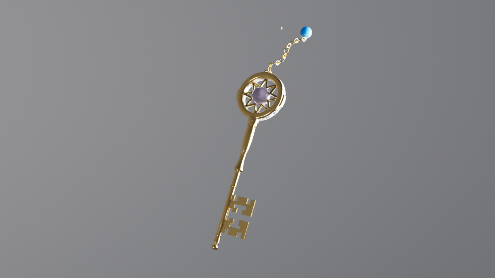
This is a key designed for a scene in a 3D animation project in which a door is unlocked. The design was inspired by an antique key. My aim was to create an object that combines both fantasy and realism. To start the design process, I chose a reference image, which acted as a foundation. I then created the intricate details, such as the crystal in the center of the key and the one attached to the end of the chain. Most of the work on these details was accomplished by using the lathe tool in Cinema 4D.
Antique key | 2024 | Cinema 4D
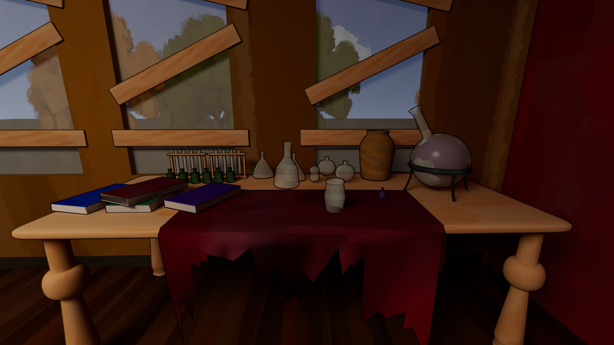
This is a screenshot of the interior of my 3D animation project. The atmosphere of the interior environment is inspired by an abandoned house. I developed this atmosphere using a mood board and reference images. I also created all the models and textures, which I designed in Photoshop with the paint and smudge tools to achieve a hand-painted look.
Lock & Key Interior | 2024 | Cinema 4D
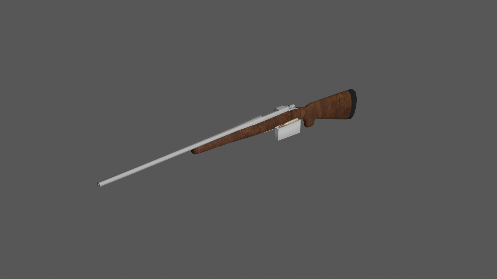
This image showcase a rifle model I created using a reference image. The design is intentionally crafted to match a low-poly and stylized aesthetic. My primary goal with this model was to familiarize myself with Blender and improve my skills in the software. To create the model, I first started with a circle in Blender as the base for the stock. I then built forward to create the entire stock, while the barrel began with a simple cylinder. The model was created for FPS animations.
Rifle animation | 2025 | Blender
This is my first 3D animation project, and it was submitted to the BMMC Film Festival. The task required me to create an animation where a key is broken from a rock and used to unlock a door to a house. The atmosphere of the interior environment is inspired by an abandoned house. I developed this atmosphere using a mood board and reference images. I also created all the models and textures, which I designed in Photoshop with the paint and smudge tools to achieve a hand-painted look. The animation was rendered as PNGs and imported into After Effects for additional work, including sound and effects. I would say this project is not fully complete, as I want to address the camera clipping through the wall and slow down the animation in Cinema 4D instead of After Effects to avoid the choppiness seen in the video
Lock & Key | 2024 | Cinema 4D
I modeled a short 3D animation of a bonfire in Blender. I achieved the fire effects primarily using a material I created, incorporating Voronoi textures and color ramps. To create the ripple effect, I used an icosphere with a subdivision surface and a displacement modifier applied to it, while an empty object is used in the displacement modifier, and moved along the X-axis. This project aimed to create a bonfire that could be used as a game or short animation, matching a cartoon or animated style.
Cartoon Bonfire | 2025 | Blender
A first-person animation created using the previous rifle model and an arm rig by DJMaesen on Sketchfab, this is my first attempt at an FPS animation. The primary purpose was to develop my skills and familiarity with rigs and bones in Blender. I added grease pencil effects in Blender to the animation to give it a more cartoony look and to help hide the choppiness and unrealistic aspects of the animation. I also want to eventually add a reload animation and a muzzle flash when the rifle is fired.
Rifle animation | 2025 | Blender
This is a game I developed using the p5 library for JavaScript. I created all the game assets myself, except for the music, which I sourced from opengameart.org. This project aimed to help me become accustomed to the JavaScript language. The game's objective is straightforward: you need to defeat a specific number of enemies or collect a certain number of stars. I selected a hack-and-slash game because it offers brevity and good replay value.
Stick Slash Tournament | 2024 | JavaScript / p5
Download Files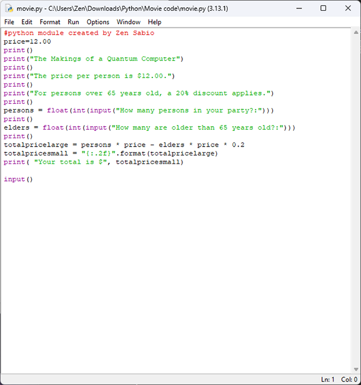
For this project, I created a Python program that calculates the total cost of movie tickets for a group, factoring in a senior discount. I began by setting a flat ticket price of $12.00. The script then uses the input() function to prompt the user for two pieces of information: the total number of people in their party and how many of them are over 65 years old.
If any members of the group are seniors, the program automatically applies a 20% discount to their individual ticket prices. The rest of the group pays the full price. I used simple arithmetic to calculate the discounted and full-price portions, then formatted the final amount to two decimal places for readability. At the end, the program prints the total amount due. A final input() call pauses the program so the user can see the result before the window closes.
Movie Ticket Calculator | 2024 | Python
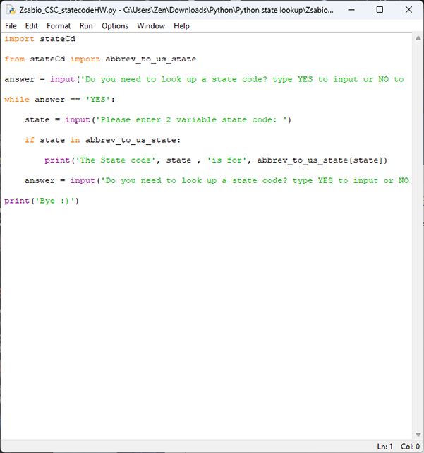
For this project, I was tasked with writing a Python program that allows users to look up U.S. state names based on their two-letter postal abbreviations. To accomplish this, I used a pre-written file called stateCd.py, which contains dictionaries mapping full state names to abbreviations and vice versa. In my script, I focused on the reverse lookup feature, importing the abbrev_to_us_state dictionary and using the input() function in a loop. The loop keeps prompting the user to enter a state abbreviation (like "NY" or "CA") and returns the corresponding full state name (like "New York" or "California") if the abbreviation is valid. If the user types "NO," the loop ends and the program says goodbye.
State Look up | 2024 | Python
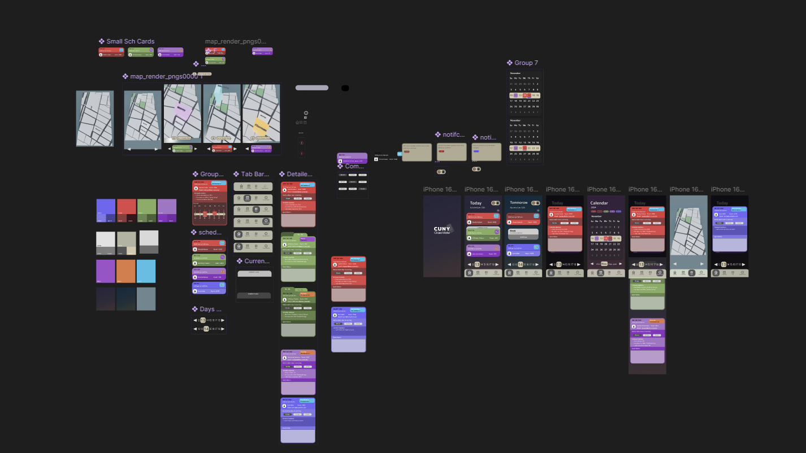
I designed this app for a UX class. It addresses the need for a user-friendly scheduling tool for students. At the beginning of each semester, checking your schedule can take a significant amount of time. This app allows you to access your schedule and class locations quickly and effortlessly. The design aims to make the process as clear as possible. It incorporates color coding for classes and a straightforward card layout to maintain consistency as schedules change each semester, as well as a simple map for campus buildings. Creating the app involved sketching a low-fidelity prototype, which I then imported into Figma for peer user testing before developing the final design.
Student Scheduler Mobile App | 2024 | Figma
View File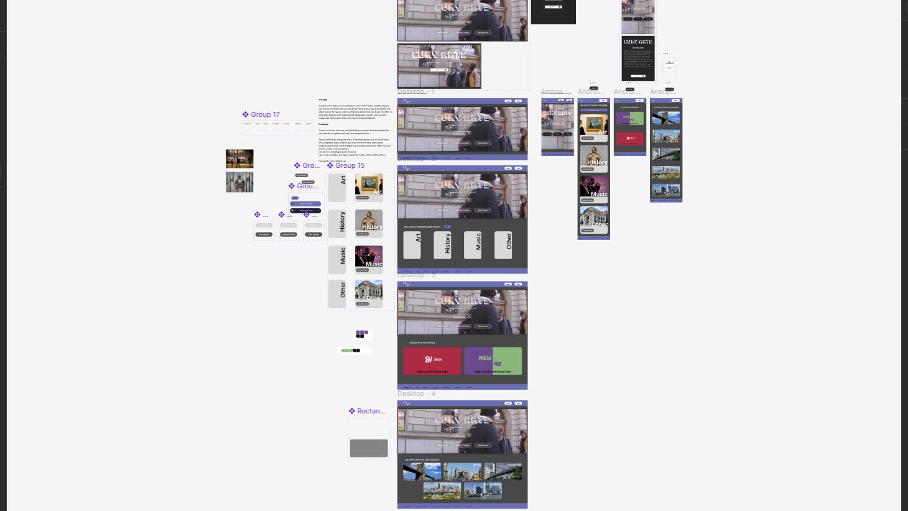
This is a redesign of the CUNY Arts website. The main issue I noticed was that the site utilized a linear or single-page design, lacking subcategories for users to click on. This layout can confuse users trying to pinpoint exactly what they want, especially regarding the museums and venues that are listed on the site, which are uncategorized. To address this, I incorporated a more traditional homepage featuring buttons that open the selected content to reveal additional options, as well as an "about" button directly below the title, allowing users to choose whether or not they want to see this content, which can help prevent information overload. This approach maintained a clear design and enabled users to concentrate on specific tasks.
CUNY Arts Website Redesign | 2024 | Figma
View File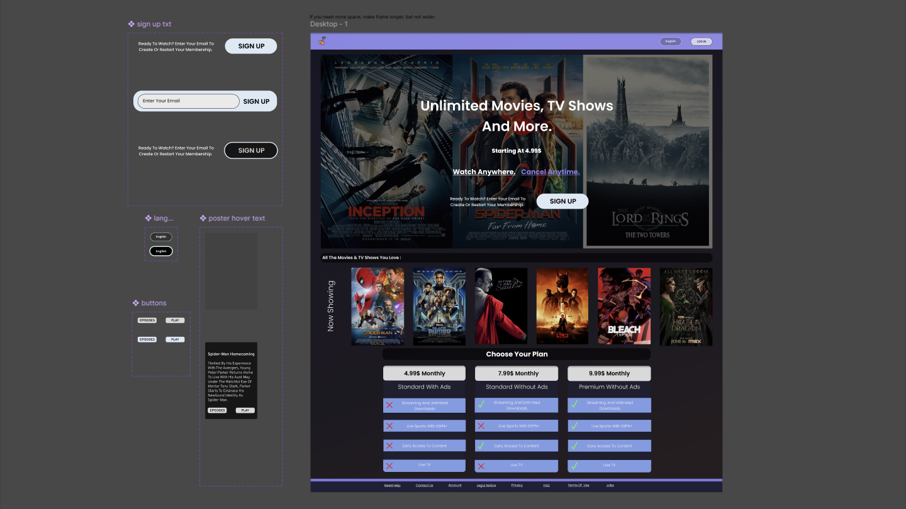
This is an app prototype that was created with Figma. It was developed for a movie and TV show streaming service and includes multiple layouts for various screen sizes. I aimed to align it with other streaming service websites while also maintaining a unique design. It drew inspiration from Hulu, Max, and PBS. I employed a layout grid to ensure all components were evenly spaced to create a clean, easy-to-navigate interface.
Streaming Website | 2024 | Figma
View File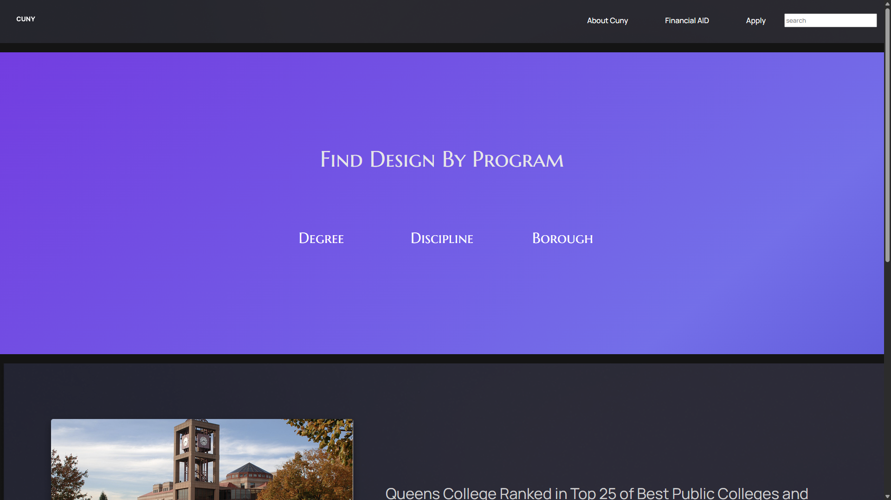
This site is designed to search for CUNY programs related to media design and to assist prospective CUNY students in finding a design or animation program at a CUNY college.
View Site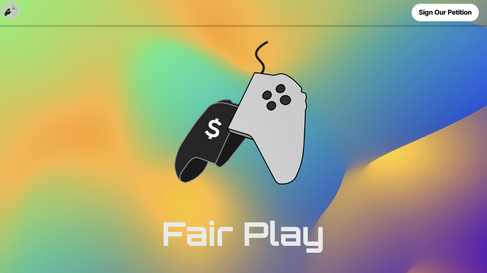
This is the website for a media campaign I developed. The site was partly crafted in Figma and Framer, and I also designed the logo. The campaign aimed to encourage gamers to sign petitions to combat microtransactions in gaming.
FairPlay Site | 2025 | Figma & Framer
View Site